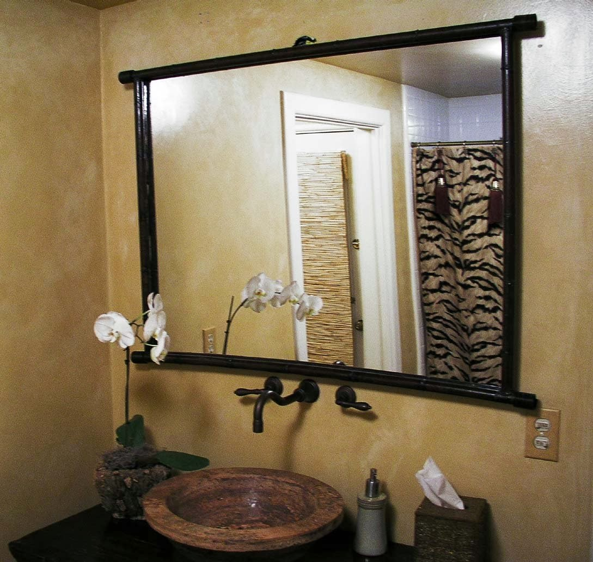

Kaca yaitu salah satu unsur yang cukup penting pada sebuah bangunan baik untuk rumah tinggal, pertokoan, gedung bertingkat ataupun multi use building. Fungsi utama kaca yakni sebagai pencahayaan alami dan juga sebagai bagian dari estetika bangunan. Kaca juga berfungsi sebagai daerah keluar masuknya cahaya sang surya pada sebuah bangunan. Karenanya dari itu, benda ini cukup penting diterapkan pada sebuah bangunana.
Tidak cuma kaca, sekarang juga sudah hadir material pensupport bagi bangunan yang sedang banyak di bangun ialah material parket lantai kayu jati. Semua material hal yang demikian dapat di aplikasikan harga sebuah hunian tampak lebih indah nyaman dan juga aman.
Jasa Pemasangan Kubikel Toilet di Magetan

Kubikel toilet mempunyai desain yang mewah dan elegan sehingga siapa saja yang memandangnya pasti akan berminat, tidak cuma itu kubikel kaca Magetan memberikan kesan bersih, rapid an tersusun. Banyak profit yang bisa di daptkan dengan mengaplikasikan kubikel kamar kecil Magetan diantaranya ialah tampilan yang lebih elegan dan lebih bersih.
Anda juga bisa membikin kamar mandi di space yang lebih kecil dan tak membutuhkan lahan yang seperti itu besar untuk membikin kamar kecil yang banyak. Kaca juga bisa menjadi solusi estetika kamar mandi, namun juga bisa jadi dilema kalau Anda memakai material dan daerah yang salah. Kaca sebagai penyekat dalam kamar mandi lazim disebut kaca shower. Kaca shower banyak digunakna sebab memberikan kesan mewah.
Profit dari sekat kaca memberikan yakni dapat memberikan efek luas sebab ruangan tersekat melainkan secara visual tak.
Namun pemakaian kaca di kamar mandi bisa jadi problem ketika Anda meletakkannya dengan salah. Kaca shower yang di jual di jamin kaca shower yang mempunyai kwalits terbaik dan berkualitas tinggi.
Distributor & Supplier Kaca Shower
Kalau akan memberikan kesan lapang ketika berada di kamar mandi, mandi dengan shower akan memberikan kesegaran tersendiri dibanding kamar mandi dengan bak mandi. Dan sensasi mandi menjadi lebih asik untuk dinikmati. Penyekat ini akan memisahkan antara daerah berair yang diaplikasikan untuk mandi atau meletakan shower dan daerah lain yang ialah area kering.
Disana anda bisa mendapatkan kaca shower yang pastinya pantas untuk kamar mandi anda. Harga yang ditawarkan bahkan tergolong sungguh-sungguh murah.
Distributor, Supplier & Jasa Pasang Kanopi Kaca
Kanopi kaca kian banyak diminati sebab sekarang sudah banyak bangunan yang memakai bahan kaca untuk lebih mempercantik tampilan rumah. Anda dapat memilih kanopi kaca yang pantas dengan kebutuhan dan kemauan anda. Canopy kaca dengan atap kaca memang sebuah bangunan yang asangat elgan untuk jaman modern seperti kini ini dengan harga yang sangat lumayan kalau di bandingkan kanopi atap lazim. Ada beberapa alasan mengapa Pintu Kaca Shower banyak digunakan salah satunya adalah kaca lebih tampak bersih dan rapi dan juga lebih gampang dalam perawatannya. Kalau tembus pandang, kaca menyerap cahaya yang masuk sehingga kian tebal kaca karenanya kian sedikit cahaya yang bisa melewatinya, karenanya sifat transparannya makin berkurang.|Di samping pintu kaca shower akan membuat kamar mandi kecil tampak lebih besar.
Seiring dengan perkembangan dunia properti, sekarang kanopi kaca tempered sudah berkembang cepat mencontoh arsitektur modern. Ini nampak dari bahan material yang di gunakan dalam pembuatan kanopi kaca. Sekiranya itu, kanopi juga bisa melindungi mobil dan kendaraan lain anda. Tidak anda sedang mencari kanopi kaca, anda dapat seketika mengunjungi dis.or.id. Disana anda akan mendapat kanopi kaca yang pantas dengan bermacam ketebalan dan harga yang cukup relatif murah.
Jasa Maintenance Kaca

Jasa maintenance kaca menawarkan pelayanan perawatan bahan bangunan yang terbuat dari kaca. Biasanya ditahui banyak pemilik gedung kaca yang berkeinginan merawat bangunan. Beraneka, kaca akan nampak kusam sebab telah lama tidak dibersihkan. Membersihkan bagian kaca gedung Anda yang mungkin rusak, pecah, atau mengalami permasalahan lainnya.
Lebih dari itu, Jikalau ahli yang dimilik oleh dis.or.id juga dapat membetulkan kaca yang rusak. Dis.or.id menyiapkan segala macam kaca sesuai keperluan saat ini.
Tak anda mebutuhkan jasa maintenance kaca, anda bisa mengunjungi dis.or.id. Sekiranya spesialis juga sangat memutuskan.
Jasa Pemasangan Kaca Tempered

Diperlukan kaca ini diwujudkan dari kaca float berkwalitas tinggi melewati proses pemanasan thermal di mana kaca dipanaskan sampai pada titik lunak kemudian didinginkan dengan cepat. Dis.or.id memiliki semua kekuatan ahli yang di rekrut cuma mereka yang profesional yang tahu persis bagaimana sistem menggunakan alat dan bagaimana membersihkan kaca gedung bertingkat. Kecuali itu saja. Banyak komponen properti yang bisa diciptakan dengan bahan berupa kaca tempered. Kini, semakin banyak properti yang menerapkan kaca tempered. Melainkan dulu hanya gedung perkantoran atau sentra perbelanjaan modern saja yang memakai jenis kaca ini, sekarang rumah hunian juga sudah dibangun dengan kaca tempered.
Seandainya itu, bermacam-macam bagian properti akan kian menarik bila diwujudkan dari kaca tempered seperti kanopi, pintu, kamar mandi, dan balkon.
Sementara itu, untuk hunian, kanopi dan kamar mandi menjadi komponen yang paling menarik jika diciptakan dari bahan kaca tempered. Tak saat ini anda sedang berharap membangun suatu bangunan atau gedung, anda bisa memanfaatkan kaca tempered untuk diaplikasikan lantas ke semua jenis bidang. Kalau aman kaca tempered juga kapabel memberikan kesan keindahan yang amat bagus dibandingi dengan kata ragam lainnya. Anda bisa segera mengunjungi dis.or.id untuk mendapatkan berita mengenai jasa pemasangan kaca tempered, mengaplikasikan kaca tempered dan pastinya hasil yang diberi malahan akan sesuai dengan apa yang Anda inginkan.
Distributor & Supplier Pintu Kaca

Pintu kaca yakni hal yang cukup penting dimiliki oleh sebuah bangunan. Ada banyak desain pintu kaca yang bisa kita temui seperti pintu kaca berbentuk sliding (geser) atau folding (lipat). Tidak Anda menyenangi dengan pintu kaca dengan frame, Anda dapat pilih apakah bingkai tersebut terbuat dari bahan kayu atau alumunium. Kekuatan variasi kaca yang bisa Anda pilih untuk pintu kaca Anda seperti kaca tempered yang sedang booming atau kaca non-tempered yang harganya lebih relatif murah. Sekarang tidak kalah penting lagi yakni pemilihan kaca. Dalam hal ini, terdapat beberapa tipe kaca dengan kualitas yang terbaik. Kini paling banyak diminati ketika ini merupakan kaca tempered sebab jauh lebih kuat dan tahan lama.
Anda dapat memiliki pintu kaca unggulan anda kini juga dengan mengunjungi dis.or.id. Bila spesialis yang benar-benar profesional sehingga betul-betul siap untuk menciptakan pintu kaca seperti apa yang mau Anda miliki.
Dis.or.id juga menyiapkan sebagian tipe kaca dengan ketebalan yang berbeda. Dis.or.id mempunyai energi yang sudah betul-betul profesional di bidang ini. Untuk budget yang lebih sedikit, Anda bisa memilih jenis kaca non-tempered.
Jual Kaca Cermin

Kaca cermin kini memiliki desain yang berbeda. Lihat saja banyak produk cermin yang dijadikan dengan desain unik dan menarik. Banyak desain menarik dari cermin yang bisa Anda pilih di sini. Kini, cermin tidak hanya berbentuk persegi atau persegi panjang saja. Ada cermin yang didesain unik seperti penyerupai daun, oval, dan lain sebagainya. Bahkan juga bagian tepi. Artinya, Anda tidak bisa mengamati yang ada di dalam ruangan.
Anda juga bisa tentukan apakah berkeinginan mempunyai cermin yang memiliki frame atau tidak. Sementara itu, Anda yang berada di dalam ruangan dapat memandang orang lain yang ada di luar. Cermin ini biasanya ditempatkan di kamar mandi, di atas wastafel, atau di kamar tidur. Jadi, orang di luar tak dapat memandang Anda berada di dalam. Tetapi kunjungi dan peroleh kabar menarik mengenai kaca cermin cita-cita anda. Tak anda tertarik untuk memiliki kaca cermin baik sebagai pemanis ruangan atau sebagai pintu, anda bisa segera mengunjungi dis.or.id. Disana anda bisa menerima kaca cermin yang cocok dengan kemauan anda.
Jasa Pemasangan Railing Kaca

Tak Anda ingin memiliki rumah dengan desain interior minimalis, sungguh-sungguh pas ketika komponen tangga dan juga balkon menggunakan railing kaca ini. Malahan aksesoris seperti pada pegangan tangga malahan tak terbuat dari bahan kayu lagi tapi kaca dan aluminum. Tapi, Anda semestinya pastikan railing kaca berkualitas terbaik. Sebaiknya gunakan kaca tempered sebab variasi kaca ini amat kuat. Malahan juga bahan yang diaplikasikan.
Ada banyak opsi variasi kaca yang dapat dipakai. Ada kaca tempered yang sekarang diminati banyak orang. Dengan demikian, pecahan kaca tempered tak akan melukai orang yang terkena pecahan. Kini pasti, railing kaca ini menjadi opsi yang pas. Bila memberikan kesan minimalis pada interior rumah, ini juga membikin rumah Anda menonjol lebih nyaman untuk diciptakan daerah tinggal.
Railing kaca dengan kwalitas terbaik bisa anda peroleh di dis.or.id. Harga yang betul-betul ekonomis serta kwalitas terbaik yang sudah terjamin membikin anda tak akan menyesal membeli railing kaca di dis.or.id.
Distributor & Supplier Pintu Lipat Kaca

Secara awam, kaca dibagi menjadi 6 macam, yakni kaca jernih, kacang berwarna atau tinted glass, kaca es, kaca cermin atau one way glass, kaca laminasi, dan yang terakhir kaca tempered. Namun diakui bahwasannya ada macam kaca yang harganya di bawah kaca tempered. Tetapi, Sekiranya Anda hitung kembali, selisih harganya tidaklah terlalu banyak.
Timbul pertanyaan kenapa Sepatutnya menggunakan kaca tempered. Dengan demikian, sinar matahari di siang hari bisa masuk ke dalam ruangan. Dan dengan adanya pintu kaca ini, keamanan kian bagus.
Distributor & Supplier Partisi Kaca

Partisi kaca menjadi pilihan yang pas bagi Anda yang menghemat tarif bangunan. banyak properti yang menggunakan bahan berupa kaca sebagai partisi. Anda lihat di sentra perbelanjaan modern, hotel, dan juga perkantoran. Bagian tertentu seperti kamar mandi dalam atau taman dalam ruang yang lazimnya terdapat di tengah atau belakang rumah biasanya mengaplikasikan pembatas berupa partisi kaca. Anda dapat menghitung sendiri berapa uang yang semestinya Anda siapkan untuk membeli bahan untuk partisi tembok. hanya rumah, perkantoran juga diciptakan sedemikian rupa kelihatan sungguh-sungguh minimalis dan menarik. Lain sekiranya Anda memilih menggunakan partisi kaca. Bahan ini lebih murah dan gampang dalam pemasangan. Kwalitas, untuk space yang demikian itu luas, Anda menyekat menjadi beberapa ruangan dengan partisi ini tanpa merasa ruangan menjadi sangat sempit. Anda dapat mereka. Selain, Anda tahu ada desain yang berbeda. Ada partisi kaca frameless atau tanpa bingkai dan partisi dengan . Selain itu, tentukan juga kaca yang mau diterapkan apakah transparan, semi transparan, atau kaca cermin yang membuat ruangan sangat privat. Bila anda kesulitan untuk memasang dinding kaca penyekat, dis.or.id menyediakan jasa pemasangan dinding kaca penyekat untuk kamar mandi rumah anda. Disana anda akan partisi kaca yang sesuai dengan keinginan anda.